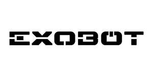

Trade Mark Journal No.2025/044 31 October 2025
UK00004265547 17 September 2025 (7,9,12,35,37,42)

International priority date claimed: 15 August 2025
(Oman)
(190411)
International priority date claimed: 15 August 2025
(Oman)
(190412)
International priority date claimed: 15 August 2025
(Oman)
(190413)
International priority date claimed: 15 August 2025
(Oman)
(190416)
International priority date claimed: 15 August 2025
(Oman)
(190417)
International priority date claimed: 15 August 2025
(Oman)
(190420)
- Class 7
- Machine tools, power-operated tools; motors, electric, other than for land vehicles parts and fittings of engines, motors and powertrains, namely, actuators, air compressors, air filters, alternators, bearings, belts, brushless DC motors, control cables, controllers, carburettors, crankcases, cylinder heads, cylinder liners, bearings, engine oil pans, cylinders, electronic ignitions, exhaust silencers, exhaust mufflers, exhaust manifolds, exhaust systems, filters, fans, fuel injection apparatus, gaskets, lubrication systems, piston pins, pistons, piston segments, power generators, radiators, turbochargers, universal joints, valves, water pumps; pumps [parts of machines, engines or motors]; belts for motors and engines; camshafts for vehicle engines; Robotic mechanisms for use in vehicle manufacturing; control cables for machines, engines or motors; control mechanisms for machines, engines or motors; parts and fittings for all the aforesaid goods.
- Class 9
- Computer programs for an all-around-view of a vehicle; on-board computers for vehicles; computer hardware and software for autonomous driving; vehicle hardware and software; apparatus, instruments and software for conducting, switching, transforming, accumulating, regulating or controlling the distribution or use of electricity in the field of vehicles and vehicle charging apparatus, instruments and cables for electricity; battery monitoring software; software for in-vehicle haptic technologies; mobile application software; vehicle simulation software; artificial intelligence software for vehicles; vehicle control software; software and mobile applications that enable interaction and interface between vehicles and mobile devices; in-car internet connectivity hardware and software; on-board diagnostics software; computer hardware and software for autonomous driving; vehicle communication software and scanners for connecting drivers with electric vehicle charging networks, traffic data, parking locations and vehicle diagnostics; software providing virtual goods, namely, downloadable content in the field of cars, for use in online environments, virtual environments, or extended reality virtual environments; downloadable virtual goods, namely, vehicles, vehicle parts and fittings, vehicle accessories and vehicle liveries and skins, authenticated by the non-fungible tokens [NFTs]; computer software, recorded; data processing apparatus; data loggers and recorders; computer programs, downloadable; downloadable and recorded content; downloadable wallpapers and screensavers; computer programs, recorded; computer operating programs, recorded; computer software applications, downloadable; computer software platforms, recorded or downloadable; transmitters of electronic signals; navigation apparatus for vehicles [on-board computers]; navigation, guidance, tracking, targeting, surveying, photographic, cinematographic, audiovisual, signalling and detecting apparatus, instruments and devices for vehicles; vehicle radios; radios, speakers, amplifiers, microphones; semi-conductors; integrated circuits; interactive touch screen terminals; Remote control apparatus; navigational instruments; satellite navigational apparatus; video screens; accumulators, electric; accumulators, electric, for vehicles; audio- and video-receivers; cables, electric; chargers for electric accumulators; charging stations for electric vehicles; electronic key fobs being remote control apparatus; electronic keys; encoded key cards; electronic key cards; locks, electric; parking sensors for vehicles; scanners [apparatus] for performing automotive diagnostics; simulators for the steering and control of vehicles; speed checking apparatus for vehicles; speed indicators; steering apparatus, automatic, for vehicles; voltage regulators for vehicles; head-up display apparatus for vehicles; automatic indicators of low pressure in vehicle tires; kilometer recorders for vehicles; rearview cameras for vehicles; artificial intelligence software for autonomous driving; downloadable mobile applications for vehicle diagnostics, control and navigation; electric batteries for vehicles; vehicle-to-vehicle (V2V) and vehicle-to-infrastructure (V2I) communication apparatus; battery management systems for electric vehicles; sensors for autonomous vehicles; LiDAR (light imaging detection and ranging) sensors; radar apparatus; vehicle simulation software; artificial intelligence software for vehicles; on-board electronic systems in vehicles for providing driver assistance; human-machine interface systems (HMI) including touchscreens and digital dashboards; telematics apparatus for vehicles; infotainment systems for vehicles; parts and fittings for all the aforesaid goods.
- Class 12
- Automobiles; vehicles; electric vehicles; vehicles for locomotion by land, air, water or rail; driverless cars [autonomous cars]; remote control vehicles, other than toys; driving motors for land vehicles; engines for land vehicles; powertrains for vehicles; engines and motors for vehicles; trailers and carts; treadplates for vehicles; exterior and interior trim for vehicles; automotive body kits comprising external structural parts of vehicles; seats for vehicles; arm rests for vehicle seats; safety seats for vehicles; safety belts and harnesses for vehicles; safety signals for vehicles; motors, electric, for land vehicles; propulsion mechanisms for land vehicles; air bags [safety devices for automobiles]; automobile bodies; bodies for vehicles; automobile chassis; automobile hoods; automobile tires; axles for vehicles; anti-theft alarms for vehicles; anti-theft devices for vehicles; balance weights for vehicle wheels; bands for wheel hubs; brakes for vehicles; brake discs for vehicles; brake linings for vehicles; brake pads for automobiles; brake segments for vehicles; brake shoes for vehicles; bumpers for automobiles; caps for vehicle fuel tanks; casings for pneumatic tires; clips adapted for fastening automobile parts to automobile bodies; clutches for land vehicles; connecting rods for land vehicles, other than parts of motors and engines; couplings for land vehicles; covers for vehicle steering wheels; crankcases for land vehicle components, other than for engines; doors for vehicles; drive chains for land vehicles; freewheels for land vehicles; gearing for land vehicles; headlight wipers; hoods for vehicles; horns for vehicles; hub caps; hubs for vehicle wheels; pneumatic or hydraulic linear actuators for land vehicles; reduction gears for land vehicles; rims for vehicle wheels; safety belts for vehicle seats; seat covers for vehicles; shock absorbers for automobiles; side view mirrors for vehicles; signal arms for vehicles; solid tires for vehicle wheels; spikes for tires; spoilers for vehicles; steering wheels for vehicles; sun-blinds adapted for automobiles; surveillance towers specially adapted for vehicles; suspension shock absorbers for vehicles; torque converters for land vehicles; trailers [vehicles]; transmission chains for land vehicles; turbines for land vehicles; pneumatic tires; undercarriages for vehicles; vehicle seats; windows for vehicles; windscreens; Electric bicycles; electric scooters; parts, fitting and accessories for all the aforesaid goods.
- Class 35
- Retail services available instore and online for vehicles and accessories enabling customers to conveniently view and purchase such goods; Customer loyalty programs; Data analytics for marketing electric vehicles; advertising and promotion of vehicles and its parts, fittings and accessories; information, advisory and consultancy services relating to any of the aforesaid services.
- Class 37
- Installation, maintenance and repair of computer hardware; motor vehicle maintenance and repair; vehicle maintenance; vehicle breakdown repair services; vehicle battery charging; charging of electric vehicles; custom installation of exterior, interior and mechanical parts of vehicles [tuning]; providing information relating to repairs; tuning of bodies for automobiles; tire balancing; vehicle service stations [refuelling and maintenance]; vehicle cleaning; vehicle polishing; vehicle washing; remote diagnostics and predictive maintenance services for vehicles; installation of electric vehicle charging stations; information, consultancy and advice relating to any of the aforesaid services.
- Class 42
- Technological research; research and development of new products for others; vehicle roadworthiness testing; computer software design; installation of computer software; computer software consultancy; maintenance of computer software; updating of computer software; platform as a service [PaaS] featuring computer software platforms for vehicles; software as a service [SaaS] featuring computer software platforms for vehicles; providing virtual computer systems through cloud computing; development of computer platforms; computer system design; Development of computer platforms; Computer programming; computer programming services for data processing; design and development of autonomous driving systems; design and development of electric vehicle batteries; environmental sustainability consultancy in the field of electric mobility; development of digital twin technology for vehicles; cybersecurity services for connected vehicles; platform as a service [PaaS] featuring computer software platforms for searching, planning and navigating routes and directions based on electric vehicle charging points, places of interest, real-time traffic data and events; software as a service [SaaS] featuring computer software for vehicles for searching, planning and navigating routes and directions based on electric vehicle charging points, places of interest and events; Platform as a service [PaaS] featuring computer software platforms for journey and fleet management, arranging of courier and concierge services, and reviewing vehicle diagnostic information including battery status; software as a service [SaaS] featuring computer software for journey and fleet management, arranging of courier and concierge services, and reviewing vehicle diagnostic information including battery status; application service provider services [ASP] in respect of the aforementioned services; information, consultancy and advice relating to any of the aforesaid services.
Ceer National Automotive Company Closed Joint-Stock Company
Representative: CMS Cameron McKenna Nabarro Olswang LLP